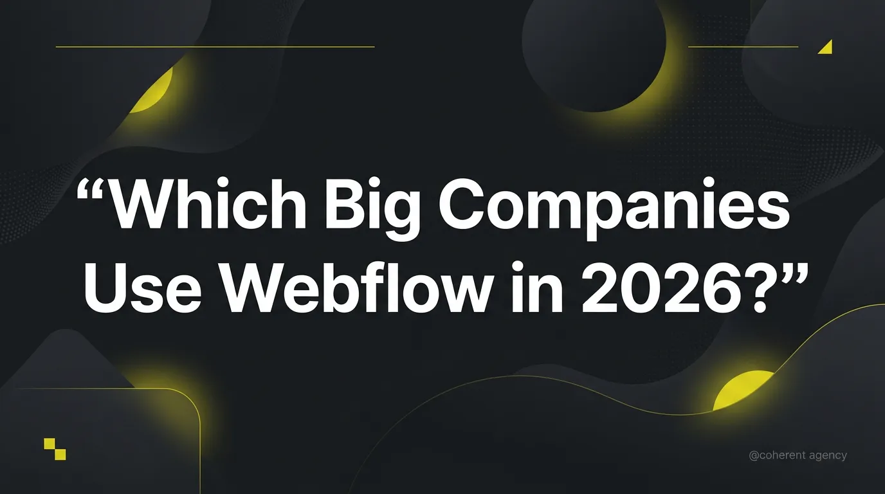
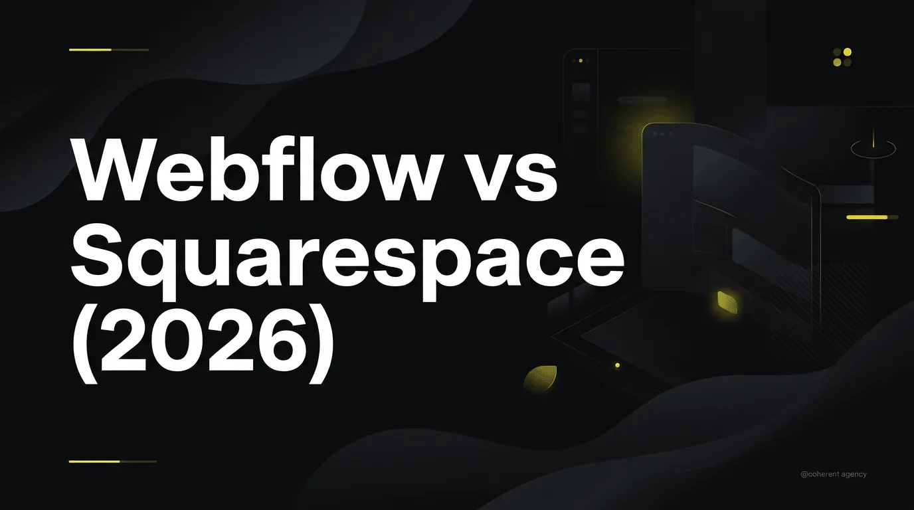
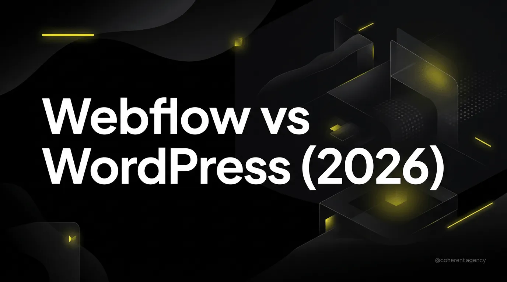

Coherent Agency partners with clients across Toronto and the globe
to design
and
develop bespoke, high-converting Webflow solutions
that generate quantifiable, measurable
business
results.
Looking for the best Webflow agency for your project? We've analyzed dozens of agencies — portfolio quality, client base...

If you're evaluating Webflow for your business, this question matters. Do serious companies use it, or is it just for freelancers and small...
Webflow's CMS is what separates it from static website builders. It lets you create structured content, generate dynamic page...
Webflow gives you a strong SEO foundation out of the box. But “foundation” isn’t “strategy.” Here’s everything you need to do...
This comparison matters most for CTOs evaluating build-vs-buy, enterprise marketing teams considering their tech stack, or...
Framer has exploded in popularity over the past two years. It’s fast, designer-friendly, and eating into Webflow’s market share. But “popular” and “right for your business” aren’t the same thing. Here’s an honest comparison....

Squarespace is the go-to for people who want a nice-looking website fast. Webflow is for people who want full design control without...

Wix spends heavily on advertising, so it’s often the first platform people encounter. Webflow is less marketed but more capable. Here’s...
WordPress powers 40%+ of the web. Webflow is growing fast among businesses that want more design control with less...
Book a free consultation. We'll discuss your goals, timeline, and budget, then tell you honestly whether we're the right fit.
Let's Talk